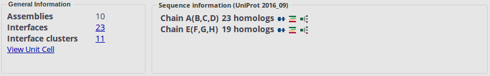
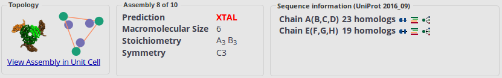
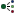

The EPPIC server
EPPIC (Evolutionary Protein-Protein Interface Classifier) aims at predicting the quaternary structure of proteins from crystal structures. It first classifies the interfaces present in a crystal structure to determine whether they are biologically relevant or not. Then it enumerates all topologically valid assemblies in the crystal resulting from different combinations of the interfaces. Finally it provides a prediction of the most likely quaternary assembly based on the individual interfaces' scores.
In addition to that, it provides information of general use for a number of structural biology applications:
- Precomputed Multiple Sequence Alignments (MSAs) of closely related homologs (within 60% sequence identity)for every protein in the PDB or for user-uploaded structures
- Colored-by-sequence-entropy surface representation using the browser embedded NGL viewer. Very useful for looking at features present at protein surfaces: interfaces, binding sites etc. (more)
- Number and distribution of core residues in interfaces
- Symmetry features of interfaces: the crystallographic operators generating each interface are provided and are depicted in red if they are conducive to infinite assemblies. Also, one can compare the left- and right-hand side of the Details table of each interface to see if it is isologous or heterologous
Inputting data
The server has precomputed results PDB-wide, if you are interested in a specific PDB id you can simply enter it and get results immediately. You can also submit your own protein structure by uploading a PDB/mmCIF file. If you upload your own file, the calculation will be triggered and the results are produced within a few minutes. Structures with many protein entities (unique sequences) will take longer.
When you upload a file, the various input parameters can be changed via the Advanced tab in the input page. You have the following options:
- Identity soft cut-off: The soft sequence identity cut-off for BLAST hits to be used in the alignment. If there are not enough sequences at this cut-off then the threshold is relaxed until the hard cut-off is reached.
- Identity hard cut-off: The hard sequence identity cut-off for BLAST hits to be used in the alignment. If there are not enough sequences at soft cut-off then the threshold is relaxed until this hard cut-off.
- Max num of sequences: The maximum number of sequences to be taken from the BLAST hits.
- Search Mode: The PDB sequence is first matched to its UniProt entry and that sequence is then used for blasting. In Global mode the full length UniProt is used, in local only the matching PDB part of the UniProt sequence is used.
Every new job run on the server is assigned a unique job identifier, a long alphanumerical string that is only known by the user who submits it and that is very hard to guess. This keeps the privacy of your data (more).
The assemblies table
All the topologically valid assemblies detected in the crystal are listed. Valid assemblies are those that exhibit Point Group Symmetry and that are isomorphous across the unit cell, i.e. all molecules are interacting in the same way throughout the lattice.
Each assembly is represented by a thumbnail image in fat ribbon representation with different subunits in different colors (1st column). Also a 2-dimensional graph diagram of the assembly is shown, with nodes being the chains and edges the interfaces between them (2nd column). Distinct molecular entities and distinct interfaces are depicted with different colors. Next appear the macromolecular size, stoichiometry (the successive letters represent different molecular entities, not chain ids) and point group symmetry (Cn for cyclic symmetries, Dn for dihedral symmetries, T for tetrahedral, O for octahedral and I for icosahedral).
Note that disjoint assemblies will be shown separated by commas in the size, symmetry and stoichiometry columns. Disjoint assemblies are those where not all components of the crystal form a single assembly but instead several disjoint ones, e.g. a crystal containing 2 protein entities will always contain a disjoint assembly formed by 2 independent monomers (one for each entity).
The prediction column
provides the predicted assembly (marked as BIO), while
all others are marked as XTAL. The predicted assembly
corresponds to that with the higuest calculated
probability, based on the scores of the interfaces that form it. The probability values
for each assembly appear in their own column too. An estimation of the
prediction confidence is provided with star icons: golden star
for high confidence, gray star  for medium confidence, no star for low confidence.
for medium confidence, no star for low confidence.
For PDB deposited entries, the assembly corresponding to the first PDB biounit assignment is marked with a small icon. The last column shows how many interfaces compose the assembly, clicking on the link the interfaces table is shown with only those interfaces belonging to the assembly.
One can switch over to the interfaces table by clicking on the "View All Interfaces" link provided on top of the table.
The interfaces table
This table provides a view of all the pairwise protein-protein interfaces present in the crystal. One can switch between this view and the assemblies table view by clicking on the "View All Assemblies" link provided on top of the table. An assessment of the biological relevance of each pairwise interface is provided, based on a geometrical and on two evolutionary criteria:
- geometry: number of core residues (at 95% burial), indicating how good the packing in the interface is
- core-rim score: ratio of evolutionary signal (sequence entropy) of core residues (at 70% burial) versus rim residues
- core-surface score: a z-score of sequence entropy of core residues (at 70% burial) versus random samples of all surface residues
Each of these indicators have predefined score thresholds to produce one of the calls:
- BIO, the interface is biologically relevant
- XTAL, the interface is only a crystal lattice contact
- NOPRED, there is not enough information available to make a decision (usually not enough sequence data)
You can see the actual scores for each of the indicators by
hovering the mouse pointer over the bio/xtal/nopred labels.
Warnings may appear on the right side of the interfaces table
marked by the icon  . By hovering the mouse over
the icon, one can see different issues for which the prediction
should be taken with care, e.g. engineered residues at the
interface core or rim, metal ions mediating the interface, atom
clashes in the interface etc.
. By hovering the mouse over
the icon, one can see different issues for which the prediction
should be taken with care, e.g. engineered residues at the
interface core or rim, metal ions mediating the interface, atom
clashes in the interface etc.
The three scores are used to calculate a final score and a probability
of the interface being biologically relevant (1 being certainly biological,
0 certainly crystal contact). The call and the probability appear in the
"Final" column.
BIO will mean that the probability is above 0.5
and XTAL that the probability is below 0.5.
This is the final prediction column and what you need to look at
first. An estimated confidence level for the prediction is depicted with stars,
golden star
for high confidence, gray star  for medium confidence, no star for low confidence.
for medium confidence, no star for low confidence.
The other columns in the interface table correspond to a few important parameters describing the interfaces: the two chain codes of the partners (e.g. "A+B"), the Buried Surface Area upon interface formation (interface sorting is based on this value), the icon of the crystal operator used to generate the second partner of the interface and the number of core residues on each side of the interface (e.g. "4+5").
The operators are represented as icons to show at a glance what
kind of crystallographic symmetry is present at the interface. The
actual full algebraic operator (e.g. "-X+1,Y-1/2,-Z") can still be
seen by hovering the mouse over the icon. The icons used for the
operators are mostly the standard ones found in crystallographic
tables:  the identity operator
(i.e. an interface in the asymmetric unit),
the identity operator
(i.e. an interface in the asymmetric unit),  a crystal translation
(integer) without rotation, a re-centering
translation without rotation, a 2-fold axis, a 2-fold screw axis,
a crystal translation
(integer) without rotation, a re-centering
translation without rotation, a 2-fold axis, a 2-fold screw axis,  a 3-fold axis, a 3-fold screw axis,
a 4-fold axis, a 4-fold screw axis,
a 6-fold axis, a 6-fold screw axis.
a 3-fold axis, a 3-fold screw axis,
a 4-fold axis, a 4-fold screw axis,
a 6-fold axis, a 6-fold screw axis.
For the rare cases where a protein is crystallized in non-chiral
space groups (e.g. racemic mixtures) there are additional
operators:  an inversion centre,
an inversion centre,  a mirror plane, a glide plane, an improper 3-fold
axis, an improper 4-fold
axis, an improper 6-fold
axis.
a mirror plane, a glide plane, an improper 3-fold
axis, an improper 4-fold
axis, an improper 6-fold
axis.
Some of these operators lead to formation of infinite interfaces if occurring between two crystallographically-related copies of the same molecule (e.g. A+A). This happens for both the pure translations and for any of the screw rotations and it is generally a very strong indication of a crystal contact. In those cases we color the operator icon in red. The final call does note take that information into account, but this is very important for the enumeration of valid assemblies in the crystal shown in the assemblies table.
Clustering similar interfaces
Clusters of similar interfaces can be shown by checking the "Group similar interfaces" box. This ensures that interfaces that share a certain amount of contact similarity are grouped together. For each cluster, a header row displays a thumbnail representation of all member interfaces, while a bottom row reports the number of contributing interfaces and their average area. Additionally for each of the scores an average is calculated and a call produced based on these averaged scores. This should provide a better prediction than individual interface scores, since the possible differences between the chains are averaged out.
Viewing interfaces and assemblies in 3D
The thumbnails in the Assembly and Interface tables give a visual cartoon representation of the assemblies and interfaces. By clicking on them one gets an interactive 3D view, depending on the selected mode: as browser embedded NGL viewer (no need for local viewer) or as a mmCIF file downloadable to a local molecular viewer. In the interface view the two protomers are represented as cartoons with interface residues also shown as sticks. Core residues from both protomers are shown in two different shades of red. The sequence entropy values for each residue are written as b-factors in the .cif file.
Once in the NGL window, by pressing "p" the user can get a surface representation of the subunits with sequence conservation values from the Multiple Sequence Alignment mapped onto it in a color code: blue colors indicate low entropies (high conservation) and colors toward yellow correspond to increasingly higher entropies (lower conservation). Pressing "n" the surface representation toggles through the chains. This representation is particularly useful in order to get a visual impression of the selection pressure patterns on the surface of a given chain. Residues that could not be aligned (for instance because they belong to an engineered tag) appear in red.
Changing 3D-Viewing mode:
The 3D-Viewer can be changed using the button "Change 3D Viewer" on the top-left corner of the main interface table. Clicking the button will open a drop-down menu where one can select any one of the two modes described above.
The lattice graph
The assemblies are analysed through a graph representation of the chains and interfaces. This lattice graph is a periodic graph, with chains being the nodes and interfaces the edges. Visual tools to look at the graph are provided. They can be useful in understanding the crystal packing and the different possible assemblies that can be constructed with the given connectivity.
- 3D lattice graph view with NGL: the graph is shown in 3D overlayed on top of the protein in semi-transparent cartoon represenatation. The nodes are placed at the centroids of the chains. Different colors are assigned to different molecular entities and to distinct interfaces. The view can be obtained by clicking on the "View Unit Cell" or "View Assembly in Unit Cell" links in the information panel.
- 2D lattice graph view (visjs): the graph is shown in a dynamic 2D layout. Different colors are assigned to different molecular entities and to distinct interfaces. This view can be obtained by clicking on any of the assembly diagram thumbnails either on the assemblies table or on the assembly subpanel on top.
Information panel
The top panel contains information about the assemblies and of the sequences and alignment used for the evolutionary scores. The information displayed depends on the context: in All Interfaces and All Assemblies views only 2 subpanels are shown with assemblies and sequence information (left screenshot below). The first subpanel on the left shows the number of assemblies, interfaces and interface clusters together with links to show each of the views. The second subpanel shows sequence and alignment information.
In Single Assembly view, 3 subpanels are shown (right screenshot below). The first subpanel on the left contains information about the currently displayed assembly and its topology, depicted with the 2D graph diagram. A link is also provided to show the 3D lattice graph view. The third subpanel is again the sequence/alignment information.
 The Sequence Information panel contains information about the sequences and their homologs. There is a line for each of the distinct protein sequences present in the protein structure. If too many chains are present, arrows will appear on the left of the panel to navigate to other chains. Each line displays some information about the homologs and some icons that lead to some actions for the given sequence entity:
- Chain identifier(s): the first letter is the chain identifier of the representative sequence. This letter can be followed by other letters (in brackets). These are the chain identifiers of other identical sequences in the structure. Click on the icon to see the alignment of the chain to its reference UniProt sequence (based on SIFTS mapping or found by blasting). Mismatching residues, normally engineering artifacts, are shown in red in the alignment. A link to the reference UniProt record is provided on the top, as well as the organism to which the entry belongs.
- Number of homologs: whenever fewer than 10 homologs are found you will see a NOPRED call in the evolutionary predictor columns (core-rim and core-surface), indicating that the MSA is too small for a proper decision to be reached. The more sequences in the alignment the more reliable the evolutionary predictions will be, so looking at this number is important. Click on the icon for more information about the homologs (more).
- Similar structures in PDB: click on the  icon to find other PDB entries that contain chains similar in sequence (down to 30% sequence identity) to this one (more).
UniProt database version
The header of the Sequence Information panel shows which version of the UniProt database version is used to find homologs for the EPPIC multiple sequence alignments. A new UniProt database release appears every month containing more and more sequences, in fact the growth is exponential thanks to new sequencing technologies (growth statistics can be seen here). With more sequences we can obtain better predictions (see this figure), thus the growth of the UniProt sequence database has quite an important effect on the accuracy of our method. We will try to maintain the results as up-to-date as possible and to update the PDB-wide precomputed results every month (for every UniProt update). In any case if you use our results it is important to quote the UniProt database version used.
The Homolog Information window
The homologs information window provides number, identity distribution and coverage of the sequence homologs in the MSA used for entropy calculation. This information is given for all unique chains in the structure. Coverage is depicted with colored segments within a rectangle corresponding to the query sequence length. Identity is color-coded in quantized bins, with green representing higher identity and red lower identity. The exact percentage of identity is also provided near the bar. The last two columns in the table provide the taxonomy of the homolog. More details of the sequence of a particular homolog can be found by clicking the UniProt link in the first column of the table. Clicking on the links provided on the Genus names will open their corresponding Wikipedia pages.
In the header one can find information about the query sequence and the identity threshold used. Together with that, the clustering threshold for redundancy elimination is also indicated: sequences are clustered so that no pair of sequences are more similar than this value. The link in the top-right corner of the window enables you to download the MSA of all homolog sequences (FASTA format). You will need an alignment viewer like Jalview to have it nicely displayed.
The Residue Detail window
Clicking on the "Details" button in the last column of the main interfaces table will open a window displaying interface-specific details. The window shows separated information for each side of the interface (the chain identifiers corresponding to the two sides are shown at the top). Below each chain identifier, score details are provided. Underneath those, a table (residue table) gives per-residue information.
Score details are shown on top of the two grids for each side of the interface: number of core residues at 70% burial (i.e. the core residues used for calculating the evolutionary scores), number of rim residues (i.e. all other interface residues), core-rim score and core-surface score.
By default, the two residue tables show only interface residues. To see all residues of the two chains one needs to switch the view in the drop down menu in the upper right corner of the window.
The first two columns of the residue tables are the residue numbers: "Serial" for the numbering based on the SEQRES sequence from 1 to n, "PDB Serial" for the numbering as it appears on the ATOM lines of the PDB file. Four pieces of information are given for each residue: total accessible surface area (ASA), total buried surface area (BSA) upon interface formation, ratio of burial (BSA/ASA) upon interface formation (core/rim assignments are based on this) and sequence entropy value from the MSA of homologs to the query sequence. More information about the homologs and alignments can be found on the Top Panel.
At the bottom of the window a legend shows the color coding used for the residue tables. Dark red denotes core residues at 95% burial, which are used for the geometry prediction. Lighter red corresponds to core residues at 70% burial, used for evolutionary core-rim and core-surface predictions. Light blue is used for all other interface residues, white for non-interface surface residues and grey for fully buried (protein interior) residues.
Searching similar structures (sequence clusters)
You can search for PDB structures that contain sequences similar to a given chain. Results are sorted from the structures with the most similar sequences (top) to structures containing more dissimilar sequences. The sequence identity level given in the first column is color-coded to facilitates the search. Crystallographic quality and crystal cell parameters are shown in separate columns. Structures can be sorted using any of these columns, which for instance can be useful to find the highest resolution structure within a set.
Double clicking on a row or on the PDB code will open the analysis page for that structure.
Note that we don't always recalculate the sequence clusters after every PDB update. Thus it is possible that for some chains there will be no button available if the clusters are not calculated for the particular sequence yet.
Known issues
- MHC and antibody interfaces not correctly predicted: due to the special nature of the MHC and antibodies sequences, the evolutionary criteria used by EPPIC do not hold for them. Thus the predictions for interfaces with at least one MHC or antibody molecule will often be incorrect.
Miscellaneous
Job identifiers
Every new job run on the server is assigned a unique job identifier,
a long alphanumerical string that is only known by the user that
submits it and that is very hard to guess. It is recommended that you
give an email address while submitting so that you receive the URL
with the job identifier in your inbox. Otherwise you will have to
bookmark it or keep a record of it yourself. It is always possible to
retrieve the job by using the URL
http://www.eppic-web.org/ewui/#id/<my_job_id>
. Whether the job is still running or already done, the URL will show
its current status and automatically display the final results
whenever it is finished. To share the results of a job with
colleagues just send them the corresponding URL. The jobs will be
stored in our servers for 1 month and then deleted.
The PDB-wide precomputed results can be accessed directly by using the permanent URLs:
http://www.eppic-web.org/ewui/#id/<PDB_code>
Low resolution and high R-Free warnings
If the X-ray resolution of a PDB entry is lower than 3.5 Å, a low resolution warning will appear in red next to the structure title on top. Whenever this happens one should treat all results with caution, since our predictions depend on accurate side chain positioning to calculate burial and assign interface core residues. A warning also appears in case the R-Free factor is higher than 35%.
Downloading results in XML format
By clicking the "Download XML" link below the main title in the
Top Panel, one gets an XML file containing all the information
about interfaces and scoring (including the MSA) for the structure
being analyzed. This is useful for further data processing. XML
downloads of precomputed PDB entries can be scripted by using URLs like:
http://www.eppic-web.org/ewui/ewui/dataDownload?type=xml&id=PDB_code.
See the Downloads page for more information.
Funding
Funding to the project came initially from the Paul Scherrer Institute (2010-2014) and later from the Swiss National Science Foundation (2013-2016). Since 2016 the RCSB Protein Data Bank has supported the project and enabled its continuation. The RCSB PDB is funded by a grant (DBI-1338415) from the National Science Foundation, the National Institutes of Health, and the US Department of Energy.